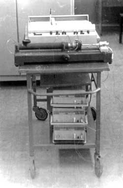
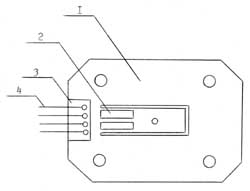
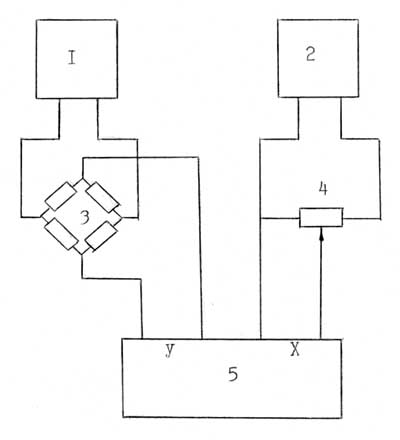
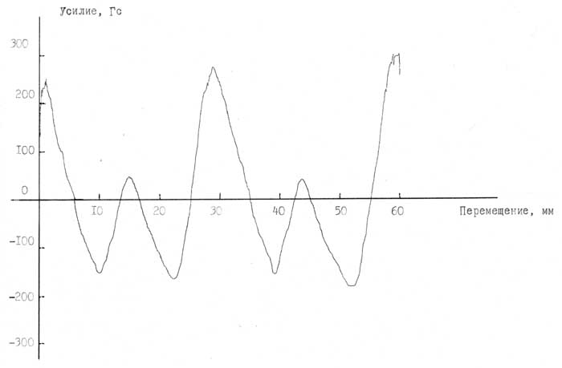

Силоизмерительная установка
При конструировании и изготовлении исполнительных электромагнитных механизмов типа реле, заслонок, клапанов встает задача оптимизации развиваемого механизмом усилия в зависимости от перемещения его рабочего органа. Эта задача решается, как правило, методом проб и ошибок, реже путем численного расчета, что приводит к существенным погрешностям и недостаткам конструкции. Облегчить проблему выбора путей решения задачи оптимизации конструкции позволяет предлагаемая силоизмерительная установка, позволяющая снимать зависимость усилия, действующего на силоизмерительную головку, от перемещения крепящегося к ней рабочего органа исполнительного электромагнитного механизма.
Силоизмерительная установка обладает следующими характеристиками:
В комплект установки входят:
Внешний вид силоизмерительной установки показан на рис. 1.

Рис. 1. Внешний вид силоизмерительной установки.
Конструктивно силоизмерительная установка представляет собой станину, на которой размещена перемещающаяся вдоль нее с помощью винтового механизма траверса. К траверсе на болтах крепится силоизмерительная головка (рис. 2) и поводок, служащий приводом от траверсы к линейному потенциометру (реохорду), являющемуся датчиком перемещения.

Рис. 2. Силоизмерительная головка: 1 - основание (дюралюминий); 2 - тензодатчики сопротивления, 4 шт. попарно с каждой стороны, тип - 2ПКБ-5-50ГВ, сопротивление каждого - 50 Ом, включены по схеме моста Уитстона; 3 - клеммная колодка; 4 - выводы.
Испытываемый объект жестко фиксируется на станине. Его рабочий орган с помощью специального зажима соединяется с силоизмерительной головкой. Блок-схема силоизмерительной установки показана на рис. 3.

Рис. 3. Блок-схема силоизмерительной установки: 1 - источник постоянного напряжения для питания тензодатчиков (Б3-46); 2 - источник постоянного напряжения для питания реохорда (Б3-46); 3 - тензодатчики сопротивления; 4 - реохорд (датчик перемещения); 5 - двухкоординатный самопишущий потенциометр (ПДП-4).
Тензодатчики сопротивления, приклеенные к основанию силоизмерительной головки (см. рис. 2), включены по схеме моста Уитстона [1], при этом датчики, расположенные на одной стороне основания, оказываются в противоположных плечах моста. Это позволяет повысить чувствительность устройства и осуществить компенсацию влияния изменений температуры на сопротивление каждого датчика. На мост подается постоянное напряжение от блока питания типа Б3-46, которое можно регулировать в процессе калибровки устройства. В другую диагональ моста включен вход "Y" двухкоординатного самопишущего потенциометра типа ПДП-4. На вход "X" потенциометра подается напряжение с датчика перемещения, подключенного к аналогичному блоку питания.
Привод траверсы осуществляется вручную, но, при необходимости получения более плавного перемещения, может быть использован подходящий электродвигатель с редуктором.
На рис. 4 в качестве примера использования установки показана зависимость усилия, развиваемого двухпозиционным электромагнитным приводом [2], от перемещения его якоря.

Рис. 4. Зависимость усилия двухпозиционного электромагнитного привода от перемещения якоря (величина усилия приведена в граммах).
Недостатком данной конструкции силоизмерительной головки является несимметричность упругого элемента. За счет того, что он изгибается в одну сторону, появляются дополнительные боковые усилия.
Ссылки:
23.12.2003
24.10.2005
16.06.2010
Альтернативные источники
энергии
Компьютеры и
Интернет
Магнитные поля
Механотронные системы
Перспективные
разработки
Электроника и
технология